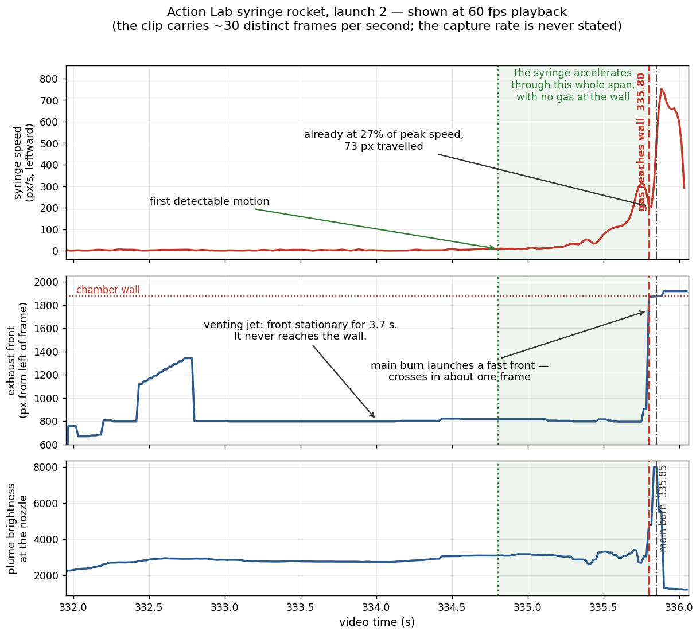
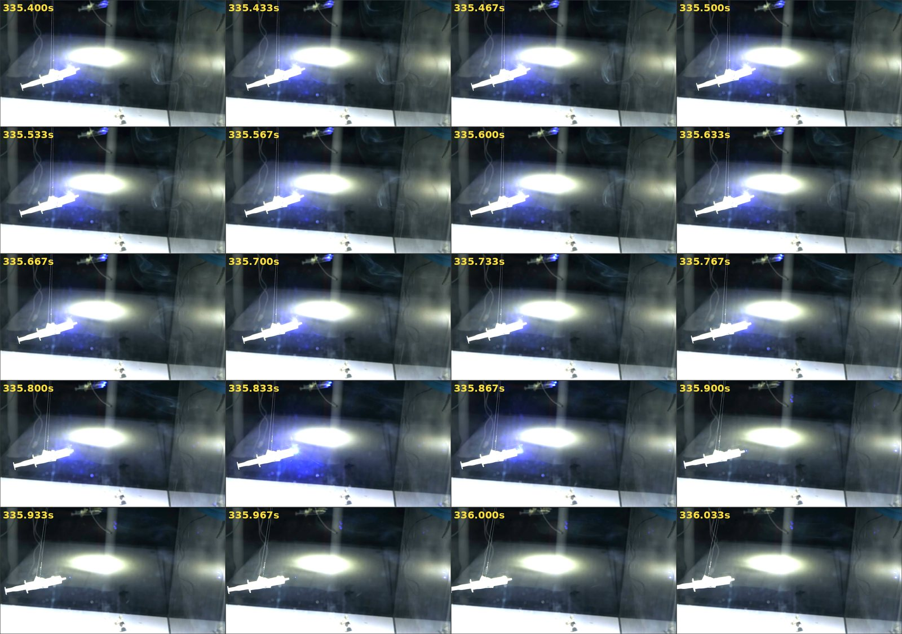

The book asks why the syringe takes so long to move. This is what the frames measure.
On p. 20, Globe Deconstruction? reproduces a still from The Action Lab's Rocket Launch In a Giant Vacuum Chamber under two questions: “Gas not being able to move a syringe in a vacuum chamber?” and “Why the long delay in movement?” In correspondence the author has put the underlying idea more sharply than the book does: that the push originates when the exhaust contacts the wall and is transmitted back through the gas column, rather than arising at the moment of ejection. That is a claim about timing, and timing is measurable. This page is the measurement — the syringe tracked frame by frame across the clean launch, alongside the brightness of its own exhaust plume. The delay is real, and is conceded here in full. What the frames do not support is the inference drawn from it. The physics argument lives on the main answer to Claim #2, Rockets Don't Push Against Air.
Observation concededInference not supported What the frames show
Gas is visible in the chamber well before the syringe visibly moves. That is true, it is in the frames, and anybody can check it. It is also forced: the exhaust crosses the chamber in a small fraction of the burn, during which the syringe travels well under one 4K pixel, so no video of this experiment could show the syringe moving first — in a vacuum chamber or in deep space. Measured rather than eyeballed, the syringe is already accelerating about a second of playback before the main burn, and its acceleration follows its own plume brightness. The honest verdict is that the observation cannot separate the two models, because both predict it — and that a null result is being read as a signal.
1 · The video, and what the book takes from it
The source is Rocket Launch In a Giant Vacuum Chamber, published by The Action Lab on 17 November 2023, 6:43 long, in 4K. It is not Levi Miller's video and not Alex Kampf's; it is a third party's, and the book is arguing against it — generously, as it happens. p. 20 credits it directly: “Without the research deconstructing this experiment, this book may never have come into existence. Thank you, Action Labs!” The date matters for one narrow reason: “November 17, 2023” appears in the book as the caption to this borrowed still, and it is the only occurrence of “2023” anywhere in the 500-page draft. It is not the date of Miller and Kampf's own chamber test, which the book never dates.
The experiment runs from about 4:14 to 5:40. Flash paper is sealed inside a medical syringe with the plunger glued so gas can only escape through the tip. The syringe hangs on threads inside a large chamber pumped down to about 0.02 atmospheres (19 mbar absolute — the gauge reads 827 mbar of vacuum against an 846 mbar ambient), and a laser sheet lights the exhaust so the plume shows up. There are two runs: the first destroys itself against the chamber wall at about 5:13, the second, at about 5:35, is the clean one. All the measurement below is on the second.
Two things are worth saying about how the book gets here, because they are to its credit and neither page of this review previously mentioned them. The p. 80 discriminator is stated conditionally — “if we consistently see a more delayed reaction… this would mean” — which is how a prediction ought to be phrased. And p. 79 records that Alex Kampf built the rig from the mainstream side: he “decided to build the experiment to prove them all wrong,” had “never done any conspiratorial research prior,” and set out to “defend his worldview with the scientific method.” Whatever one makes of the conclusion, that is a better starting posture than most of this genre manages.
2 · The observation is real. Concede it first.
Step through the first launch at 5:11–5:13 and a laser-lit plume is visible around the syringe for something like 1.8 seconds of playback before the syringe visibly moves. The second launch behaves the same way. Anyone who watches frame by frame will see gas in the chamber long before the rocket goes anywhere, and a response that denies this is both wrong and unnecessary — the observation is exactly what standard physics predicts, as §4 works out.
A caveat that cuts in the book's favour, and should be said plainly. Both runs are cut to begin after venting has already started. There is no clean pre-ignition baseline anywhere in the video. At the very first frame of launch 2 there is already a localised blue excess of about 13 brightness levels next to the nozzle against a chamber background of about 2 — measured on the 0–255 scale of the video's own 8-bit colour channels, blue minus red. So some part of “gas appears long before motion” is an artefact of where the edit begins, not a fact about the experiment. The video cannot settle its own timing question, and we are not going to pretend it can.
3 · What the frames measure
The syringe centroid was tracked across the whole of launch 2 — 265 samples over video time 331.65 s to 336.05 s — together with the brightness of the exhaust plume, measured as background-subtracted blue-minus-red, which isolates the laser-lit gas. Brightness is used throughout as a proxy for mass flow — it scales with the density of scattering gas near the nozzle — which is all the argument needs it to be.
The playback rate is 60 fps; the launch clip is not. Every frame in this segment appears twice: the per-frame displacements alternate strictly between zero and a real step, and the independent 4K plume measurements repeat in adjacent pairs. So the clip carries about 133 distinct frames, not 265, and the real-time factor is capture rate divided by 30, not 60. That conclusion does not depend on guessing the editor's workflow: whether the slow motion was conformed at 30 fps and uploaded at 60, or conformed at 60 and stretched twofold in the edit, distinct frames arrive at 30 per second of playback either way. This matters — it doubles the inferred slow-motion factor and quadruples every displacement in §4 — and an earlier draft of this page had it wrong.

The thrust signature. Syringe speed (top) and exhaust plume brightness (bottom) against video time. The shaded band is the gentle-venting phase: thrust is small, but the syringe is already accelerating through it. The dashed line at 335.85 s is the main burn, where plume brightness spikes. Original figure, computed from per-frame tracking of the video under discussion. The speed trace here is seven-point smoothed and peaks near 710 px/s; the 772 px/s quoted in the text is the same data at three-point smoothing. Past about 335.72 s the centroid is contaminated by the flash — see the caveat below the table.
Where the tracking stops being trustworthy. From about 335.72 s the flash floods the frame and pulls the centroid: the tracker's own quality metric spikes and one distinct frame shows a near-stall in the middle of the fastest acceleration. The confident window therefore ends at 335.72 s. The brightness peak at 335.85 s is independently confirmed on the separate 4K plume measurement; the exact timing of peak acceleration is not, and this page does not rest on it.
Two things fall out of this, and neither depends on knowing the capture frame rate:
—Motion begins about a second of playback before the main burn. Not at the burn, and not at any wall-contact event — during gentle venting, when the only thing happening is a small mass flow out of the nozzle. We quote the conservative figure, about 1.0 s of playback, which is a roughly three-to-one detection. This is the softest number on the page: a frame-to-frame speed criterion puts onset at 334.43 s, but the limiting noise is slow positional wander rather than jitter, and the stricter criterion of twice the positional scatter puts it at 334.8 s. The direction of the result is robust; the size of the margin is not.
—The acceleration rises continuously through the trustworthy window. Through 334.8–335.72 s there is no step and no discrete arrival: it begins as gas begins leaving and grows as the flow grows. What happens after 335.72 s cannot be read cleanly, for the reason above.

Launch 2, twenty frames at 60 fps playback, brightened. The syringe travels leftward; the exhaust jet extends to the right. Watch the jet rather than the syringe: through the middle of the sequence its visible front stays a roughly constant distance behind the nozzle. Frames from Rocket Launch In a Giant Vacuum Chamber (The Action Lab, YouTube), reproduced in small part for the purpose of criticism and review.
One measurement undercuts the mental picture the argument depends on. On the 4K stream the visible plume front sits at a constant 723–758 pixels from the nozzle right through the window from 335.25 s to 335.72 s — which is the whole of the usable data, since the measurement does not exist before 335.25 s and breaks down after 335.73 s when the plume floods. Within that window it is a quasi-steady jet, not a front sweeping across the chamber and returning.
That is not a curiosity of the contrast threshold; it is what the gas dynamics predicts. At 19 mbar the mean free path is a few microns, so this is an underexpanded jet exhausting into a background gas, not a free expansion into vacuum. Such a jet sets up a quasi-steady shock structure and then dissipates into the background over a fixed penetration length — a steady jet of fixed visible extent, which is exactly what the measurement shows. So “the cloud travels to the wall and comes back” is not something the footage shows, and on this picture what reaches a distant wall first is a weak pressure disturbance in the residual gas rather than a coherent 400 m/s cloud.
This cuts against us as well, and should be said: if the exhaust decelerates into the background, the effective speed of whatever arrives at the wall is lower than the jet's exit speed, which raises f and increases the displacement in §4. The 150 m/s sensitivity row below is there to bound precisely that, and even at that speed the figures stay small.
4 · Why the gas must reach the wall first — under either model
Thrust is ṁ·ve: mass flow times exhaust speed. A faint wisp of gas is a tiny mass flow and therefore a tiny force. The syringe responds to it instantly — but instantly to a small force, and a small force acting for a very short time produces a displacement far below anything a camera can register. The whole question is the ratio between two durations:
f = (time for the gas to cross to the wall) ÷ (duration of the thrust ramp) = (L / vgas) ÷ (Tplayback / S)
In plain words, f is how far through the burn the gas has got when it first touches the wall: f = 0.1 means the wall is hit one-tenth of the way in. L is the wall distance, vgas the exhaust speed, Tplayback = 0.60 s the measured playback duration of the ramp, and S the slow-motion factor — capture rate divided by 30, per §3.
The displacement then follows from a directly measured quantity: the syringe travels 134 pixels at 4K during that ramp. Under constant acceleration, displacement at wall contact is that travel times f ²; under the rising thrust actually observed, times f ³. Those powers are why the numbers come out so small — something starting slowly covers a hundredth of the distance in the first tenth of the time, and a thousandth if it is still building. Nothing else is needed.
Unknowns and how they were handled: the capture rate is never stated, so the table spans the range such cameras offer; the wall distance is not established by anything visible, so it spans 0.2–1.0 m; and because the image scale is only good to about ±30% (§6), the calculation is built on measured pixel travel and never converts to metres. Two further conservatisms go unclaimed below, both favouring the opposing case: the leading edge of the expansion outruns the bulk flow, shortening the transit; and the first gas leaves during gentle venting, when the real acceleration is far below the main-burn value the table assumes throughout.
capture rate
S
wall at 0.2 m
wall at 0.5 m
wall at 1.0 m
upper bnd
ramp
upper bnd
ramp
upper bnd
ramp
240 fps
8
0.01 px
<0.01
0.04 px
<0.01
0.15 px
0.01 px
480 fps
16
0.02 px
<0.01
0.15 px
0.01 px
0.60 px
0.04 px
960 fps
32
0.10 px
<0.01
0.60 px
0.04 px
2.4 px
0.32 px
2000 fps
67
0.41 px
0.02 px
2.6 px
0.36 px
10.4 px
2.9 px
Syringe displacement at the moment the first gas reaches the wall, in 4K pixels, at vgas = 400 m/s. “Upper bnd” assumes constant acceleration; “ramp” uses the linearly rising thrust §3 actually measures. Slower exhaust makes the number worse for us: at 960 fps and a 0.5 m wall, dropping vgas to 150 m/s gives 4.2 px upper bound, 0.75 px on the ramp.
Two features of that table are what make the conclusion robust rather than lucky.
—The conservative assumption is doing the heavy lifting, and it is conservative by a wide margin. Constant acceleration is a deliberate over-estimate: a burn still building delivers almost nothing at the start, so across this table the honest ramp figure runs one to two orders of magnitude below the bound. Anyone who wants to attack this calculation should attack the ramp column, not the bound.
—Pushing the parameters far enough does not rescue the claim — it destroys it. Raise f towards 1 and the gas arrives at the wall only as the burn ends, meaning the syringe finished accelerating before the gas got there, which refutes wall-mediated thrust outright. At 960 fps that crossover is a wall 7.5 metres away. So the argument needs a small f, and small f is exactly the regime in which the syringe cannot have visibly moved. There is no setting of the unknowns that gives the claim what it needs.
At any realistic combination the syringe has not visibly moved by the time the gas reaches the wall — and even at the extreme corner, at most ten. At a realistic middle — 960 fps, a wall a third of a metre away — it has travelled a few hundredths of a 4K pixel, having received at most 4% of its total impulse — and about 0.2% on the rising ramp actually observed, since a burn that is still building delivers impulse as f ² rather than f. Only by combining the fastest capture rate with the most distant wall and the slowest exhaust does the upper bound reach ten pixels, and the ramp model three. The ordering “gas reaches wall, then syringe visibly moves” is forced by a large speed ratio and a camera's detection threshold. It would look identical in deep space with no wall at all.
This is a statement about detection thresholds, not about causation, and it is worth being exact about what it establishes. It does not prove the wall plays no role. It establishes that the observation cannot distinguish the two models, because both predict it. Anyone — on either side — who treats the observed ordering as evidence is reading a null result as a signal.
5 · Where the rebound reading runs into trouble
Set the detection-threshold argument aside and take the rebound mechanism seriously as physics. Two of the obvious objections to it do not work; one does.
Two arguments we are not going to make. The first is shape: it is tempting to say a wall bounce would deliver a discrete kick where the data shows a smooth ramp. That only holds for an impulsive release. This is a continuous vent, and a continuous-flow rebound would return a scaled copy of the thrust curve delayed by the round-trip time — a ramp of the same shape, peaking with the plume, starting during gentle venting. It would reproduce the signatures, and at this time resolution the delay is unresolvable. The second is direction: gas leaves rightward, strikes the right-hand wall and returns leftward — the same direction as the recoil. Both models predict that, so nobody in either camp should argue it.
What does discriminate is magnitude, and the sum is not close. For the wall to be the source of the push rather than a perturbation on it, essentially all of the gas's momentum has to come back to the syringe. What returns is set by how much of the wall's re-emission the syringe intercepts. A real engineering surface accommodates and re-radiates rather than mirror-reflecting, so the re-emission is Lambertian and the fraction reaching a body of area A on the normal at distance r is A/πr² — four times the naive share-of-the-sphere figure, and worth getting right. For a syringe presenting 15 to 35 cm² at 0.2 to 1.0 m that is 0.05% to 3% of the outgoing momentum, against the ~100% the claim needs: a shortfall of one and a half to three orders of magnitude. Smaller than a first pass suggests, and still not a gap better bookkeeping closes.
The specular case deserves stating rather than waving away, because in the idealised limit a perfect mirror would send a large share back. Three things stop it: real surfaces at these energies accommodate rather than reflect; a diverging jet stays diverging after reflection, arriving spread over roughly twice its footprint at the wall; and a specular return would in any case be a late addition to an acceleration that had already begun, changing the size of the push rather than its start.
One argument to strike from our own earlier reasoning. A previous draft leaned on the video's chamber-pressure demonstration at 3:46–4:14 — the gauge reading the same 827 mbar of vacuum against an 846 mbar ambient before and after a burn, i.e. about 19 mbar absolute — as evidence that there is no gas column to transmit a push. That was the same error this page criticises elsewhere. Roughly 0.2 g of combustion gas in a human-sized chamber raises the pressure by about 0.15 mbar, and the gauge reads whole millibars: the null is below the instrument's resolution and is predicted by both models. The video's maker says as much on camera — “the volume of the gas released is so small compared to the volume of the total chamber.” It remains a useful demonstration that the chamber does not re-pressurise, which matters for chamber sizing; it is not evidence about the mechanism, and we should not have used it as such.
6 · What this video cannot settle
A page that only listed what the footage proves would be doing the thing it criticises. The limits, in order of how much they matter:
—The capture rate is never stated. The single most useful thing the video could add, and the reason §4 has to be a table rather than a number. Every timing objection here, in either direction, would sharpen at once if the real timescale were on screen.
—The image scale is uncertain to about ±30%, and the limiting factor is not measurement. The silhouette can be measured to about 4%, but the syringe is blown out in every frame of launch 2 — the exposure is cranked for high-speed capture, destroying the graduations that would identify its volume. A 10, 20 or 60 mL syringe cannot be told apart by shape, because medical syringes are near-geometrically similar: all three have length-to-diameter ratios within 4% of each other. The transcript's “let's try a little bit bigger syringe” and resolvable graduations on the smaller launch 1 syringe lean towards 20 mL, which is not the same as establishing it. §4 is built to avoid depending on this.
—The masses are estimates, not observations. Statements of the form “the gas leaves far faster than the syringe because momentum is conserved” fix the speed ratio only once the two masses are fixed, and neither is measurable here. Nothing in §4 depends on them, and we would rather say so than let a plausible-sounding ratio do silent work.
—Nothing visible in frame is at a known wall distance. The nearest strong vertical structure sits about 840 px from the nozzle — 0.19 m to 0.32 m depending on the syringe — but the chamber is advertised as one that “can fit a human” and arrived in a 630 lb crate, so the true along-axis distance could be well over a metre. That is why §4 spans 0.2 m to 1.0 m instead of asserting a figure.
—The syringe is a pendulum, and pendulums sway. The early motion in §3 lives at the one-to-seven-pixel scale, where thread settling, residual swing and ignition vibration all live too. Three things argue against sway. The tracker's brightness metric is flat across the onset window, so the motion is not a flash artefact. The geometry runs the same way: the syringe travels leftward while the laser-lit gas brightens to its right, so any plume light leaking into the centroid would pull it rightward, against the direction of travel, and could only under-state the early motion. And sway is oscillatory and zero-mean, whereas the measured drift is sustained and one-directional — after 334.43 s no frame reverses by more than 0.1 px — alongside a roughly constant plume, which is what a steady vent producing steady thrust would give. Suggestive, not decisive. The swing itself has not been characterised, though the pre-ignition footage would allow it, so the onset figure is good evidence rather than a settled measurement. That is test 4 in §8.
—There is no clean pre-ignition baseline. As §2 says, both runs are cut to after venting begins. The video genuinely cannot show when gas first left the nozzle.
Two corrections to our own earlier reasoning. First, before the frames were measured, our best guess at the two-stage motion here was stiction — a rig whose static friction a weak initial recoil could not break. That is wrong for this rig: the syringe hangs on threads rather than running on a track, and a pendulum has essentially no stiction to break. The two-stage appearance is mass flow — a gentle vent, then the main burn — and needs no friction story. The stiction reasoning still holds for a syringe-on-a-linear-track rig like the one at p. 80; we had generalised it too far. Second, an earlier draft treated the clip as 60 distinct frames per second rather than 30 (§3). That correction moved every figure in §4 against this page's own argument by a factor of four, and the conclusion survived anyway — which is the point of quoting a deliberately conservative bound rather than a best estimate. It was still wrong first time, and this is where that is recorded.
7 · The steelman — the version of this that isn't silly
There is a real argument in the neighbourhood, and it should be met at its strongest. In a closed chamber the total momentum of chamber plus syringe plus gas is conserved and starts at zero. The gas does eventually reach the wall and hand its momentum to the chamber, so once everything settles the whole assembly has zero net momentum again. Nothing escapes. That is entirely true.
But it is a statement about the final state of an isolated system, not about what caused the syringe's initial acceleration. The syringe is accelerated by expulsion at the start; the wall absorbs the gas's momentum some time later. Two events, separated in time, in that order — and the second cannot be the cause of the first. Conflating “total momentum is conserved” with “the wall pushed the syringe” is the whole of the error. It is also why the open-system case — a rocket in space, with nothing for the exhaust to hit — is not a special case needing separate treatment. It is the simpler one.
8 · What would actually settle it
None of this is hard to test. Each test below is stated so it could go against us: if any one came back the other way, the argument on this page would be in trouble.
1Vary the wall distance — but only with high-speed capture and a pressure log. Fire the same rocket at 0.2 m and at 1.5 m. The wall-mediated model predicts the onset of motion tracks the distance; standard physics predicts onset is unchanged. This is the cleanest discriminator, but it cannot be read with a camera at any consumer frame rate — §4's own table shows fractions of a pixel of displacement over the interval in question. It needs a force transducer on the vehicle, ideally with a pressure plate on the wall on a common clock, and chamber pressure logged throughout so that a rising ambient cannot be mistaken for either result. Total displacement will not separate the models — only onset timing will.
2Fire it at an open port so the exhaust leaves the chamber entirely and never rebounds off anything.
3Put it on a load cell. A strain-gauge or piezo cell between the syringe and its support, for well under a hundred pounds, gives the force-versus-time curve directly instead of inferring it from video. Instrument the target wall as a pressure plate at the same time and both events land on a common clock — two traces, and their order. This is the measurement that would end the argument, and it does not require rebuilding the rig.
4Characterise the pendulum. For this footage specifically: measure the syringe's swing amplitude and period from the pre-ignition frames, so the early-onset motion in §3 can be separated from sway rather than assumed clear of it.
5State the frame rate, and show the uncut ignition. Both cost nothing, and between them they remove most of §6.
Tests 1 and 3 are the ones we would most like to see, and both are within reach of the rig the book already describes. The Self-Test Protocol sets these out in hand-off form, designed to be run by the book's authors rather than by us.
9 · What this does and does not do to the book's claim
On scope: this page examines a video the book cites, not Miller and Kampf's own chamber experiment, which remains unpublished. Nothing here settles what their rig will show.
What it settles is narrow, and worth stating exactly rather than at maximum volume. The p. 20 question treats an observed delay as though it needed a special explanation. It does not: the delay is present, and it is what the physics the argument is aimed at predicts, at a magnitude that makes any other outcome impossible to film. The observation is a null result, and both models produce it.
The frames go a little further, though less far than we first wrote. Motion beginning during gentle venting and acceleration rising with the plume are what thrust-follows-mass-flow looks like, and they rule out the naive version of the claim — the vehicle sitting inert until a cloud completes its transit — because the syringe is demonstrably already moving. They do not rule out a continuous-flow rebound, which would give the same shape delayed by an unresolvable interval. Separating those needs test 3, not a camera.
He made an error of inference, not of honesty. The delay is genuinely visible, genuinely counter-intuitive, and reading causation into it is a natural mistake rather than a dishonest one — the whole point of §4 is that the appearance is compelling and still uninformative. What the argument needed was a frame rate and a tracked centroid, which the video does not supply and which nobody had gone and measured. That is now done, and it is above; two of our own errors are recorded in §6 for the same reason. If any of it is wrong, we would like to know which part.
Sources & further reading
The Action Lab, Rocket Launch In a Giant Vacuum Chamber, YouTube, 17 November 2023 — the primary source. Chamber-pressure demonstration at 3:46–4:14; rocket construction 4:14–4:44; launch 1 at 4:44–5:13; launch 2 at 5:13–5:38; the maker's own momentum explanation at 5:38–6:06.
Levi Miller, Globe Deconstruction?, prerelease draft, 2026 — p. 20 (the still, the credit to The Action Lab, and the two questions), p. 79 (how the rig came to be built), p. 80 (the design and the conditional delayed-reaction discriminator), p. 82 (Kampf's Law), p. 183 (the claim that the experiment is conclusive).
Shape Debate, Claim #2, shapedebate.com, and the referenced vacuum-chamber test by Alex Kampf, listed as awaiting upload.
Measurements underlying this page: syringe centroid over video time 331.65–336.05 s, 265 samples at 60 fps playback across ~133 distinct frames, 1080p; plume-front position measured independently on the 4K stream over 335.25–335.72 s; plume brightness as background-subtracted blue-minus-red. Ramp travel 134 px at 4K over the 0.60 s playback window ending at the main burn. Tracker contaminated by flash after 335.72 s.
Sutton & Biblarz, Rocket Propulsion Elements, ch. 2–3 — the thrust equation, and why ṁ·ve is set at the nozzle.
H. Ashkenas and F. Sherman, “The structure and utilization of supersonic free jets in low density wind tunnels,” Rarefied Gas Dynamics 4, vol. II, 84–105 (Academic Press, 1966) — the underexpanded-jet-into-background-gas structure behind the fixed visible plume length in §3.
Goodman & Wachman, Dynamics of Gas–Surface Scattering — thermal accommodation on engineering surfaces, behind the “diffuse, not specular” step in §5.
On near-wall recirculation contaminating thrust measurements — a real effect that test facilities are built to avoid, and one that is not the book's mechanism: J. E. Foster and T. J. Topham, “A review of the impact of ground test-related facility effects on gridded ion thruster operation and performance,” Physics of Plasmas31(3), 030501 (2024).